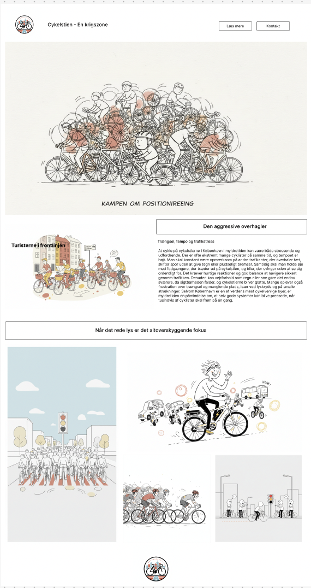

INDHOLD
I Tema 5 har vi arbejdet med grundlæggende indhold. Her har vi arbejdet med at anvende principper og teorier om brugeroplevelse og brugerens samspil med digitale medieproduktioner. Vi blev stillet en opgave, hvor vi skulle arbejde i teams, hvor vi skulle re-designe en hjemmeside. Vi havde meget fokus på datasikkerhed, rettigheder, samt anvende centrale principper, teorier og metoder til design af vores nye version af hjemmesiden. Også i dette tema benyttede vi os af forskellige test, som fortalte os hvordan vi fik den bedste brugeroplevelse.
Jeg har selv i dette tema udviklet mine gruppe arbejdsevner og præsentationsevner. Deruover har jeg oogså fået en størrer forståelse for at formidle praksisnære design- og udviklingsprocesser og løsninger til samarbejdspartnere.
Ekstra opgave
Inden vi begyndte på vores virksomhedssite, fik vi en lille opgave til at få opfrisket det voi havde læært indtil da. Her er det jeg fik lavet.
Vi valgte i min gruppe at re-designe en frisørsalons hjemmeside, så den ville blive mere brugervenlig.
Hvis du kunne tænke dig at kigge lidt nærmere på vores proces eller bare tjekke vores version af hjemmesiden ud, så kan du klikke herunder.